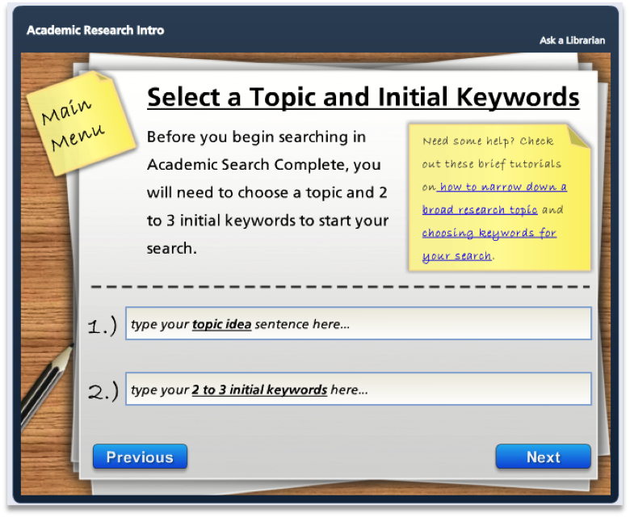
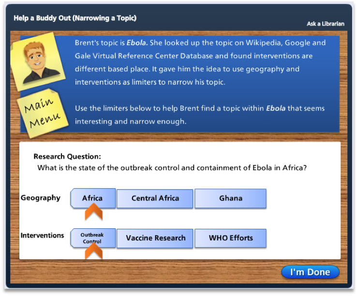
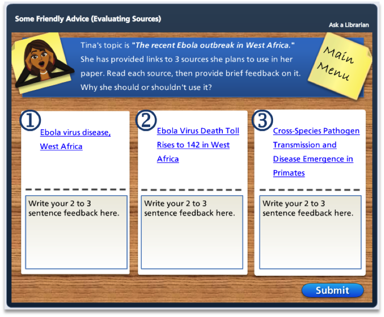
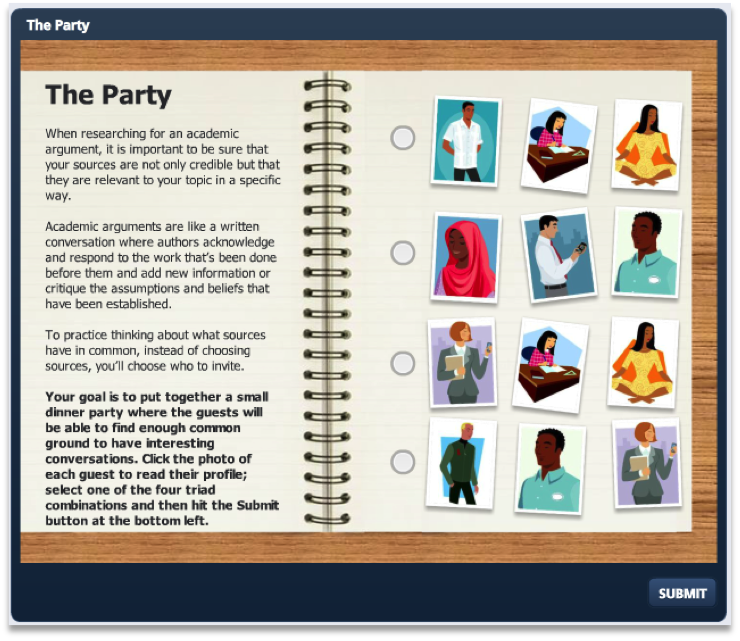
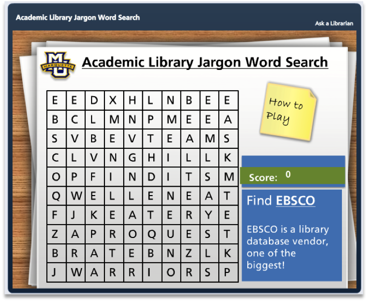
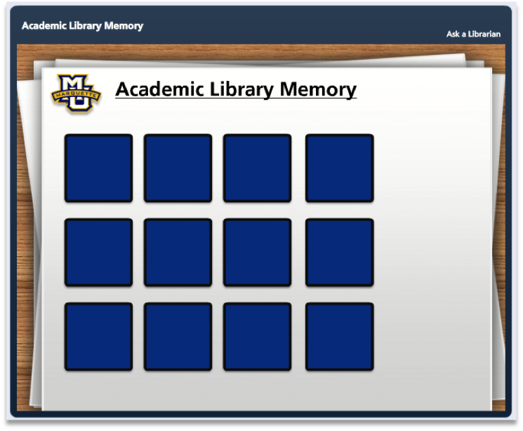
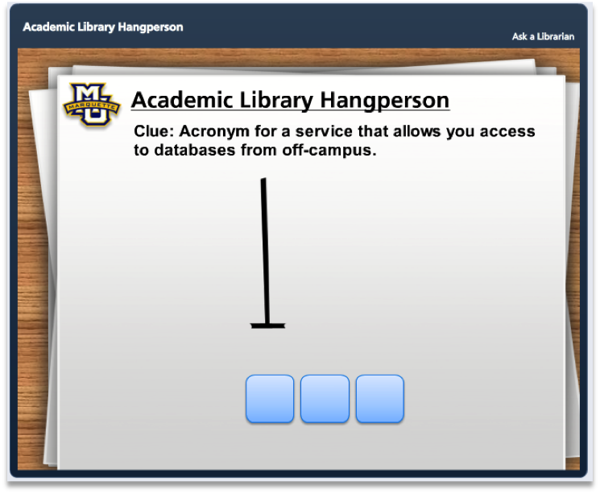

About the Project
These modules were developed to assist librarians teaching information literacy instruction in Marquette's First Year English (FYE) program. They have been used in a traditional face to face instruction, flipped classroom instruction or as stand alone online assignments.
The modules were designed using the first version of Articulate Storyline and were exported as SCORM packages which were then loaded into FYE course sites in Desire2Learn (D2L), Marquette's Learning Management System (LMS).
A more in depth description of how the modules were used in information literacy instruction can be found in the article "Is flipping enough?" in the January 2015 issue of College & Research Libraries News.
Academic Research Introduction
Intended to provide a brief introduction to academic research. A video explains types of sources, a screencast tutorial demonstrates how to search Academic Search Complete, and students have the opportunity to practice search for an article related to their topic. This information is saved to the D2L course site for review by the instructor and librarian.
Try it now »
Narrowing a Topic
In this scenario based activity, students are asked to help 3 of their classmates narrow down their topics. By moving a series of sliders, students aim to develop a research question that is interesting, yet narrow enough to find scholarly sources.
Try it now »
Evaluating Sources
In this scenario based activity, students are asked to help 4 of their classmates evaluate 3 sources they are considering using for their paper. Students can read the entirety of each source, then write a 2 to 3 sentence explanation of why their classmate should or shouldn’t use the source and why. Based on the concept of Calibrated Peer Review, there is one exemplar source, one substandard source and one bubble source.
Try it now »
Anatomy of Citations
 Do students eyes glaze over when you begin to talk about citation formats? Show students the value of learning about citations by having them practice on real content! Students must identify the needed parts of 3 real publications and drag them to the appropriate category, i.e. Journal Title, Volume, Page Number. Upon completion of the activity, students are show the MLA citation for each publication.
Do students eyes glaze over when you begin to talk about citation formats? Show students the value of learning about citations by having them practice on real content! Students must identify the needed parts of 3 real publications and drag them to the appropriate category, i.e. Journal Title, Volume, Page Number. Upon completion of the activity, students are show the MLA citation for each publication.
Try it now »
Usage of Sources (The Party)
To practice thinking about what sources work well together, instead of choosing sources, students will choose who to invite to a small dinner party. The goal is to put together a group of guests that will be able to find enough common ground to have interesting conversations.
Try it now »
Academic Library Word Search
Library jargon can confuse and confound students. In this game, students are given 5 jargon terms and their definitions and are asked to locate the terms in the jumble of letters.
Try it now »
Academic Library Memory
Students test their memory skills while also learning about library services. After making a correct match, a post note appears explaining the library service represented by the image.
Try it now »
Academic Library Hangperson
Intended to provide a brief introduction to academic research. A video explains types of sources, a screencast tutorial demonstrates how to search Academic Search Complete, and students have the opportunity to practice search for an article related to their topic. This information is saved to the D2L course site for review by the instructor and librarian.
Try it now »